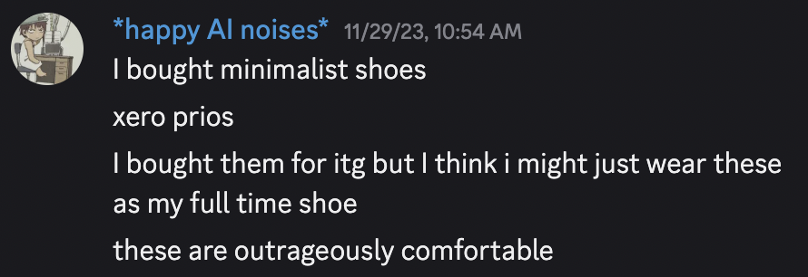
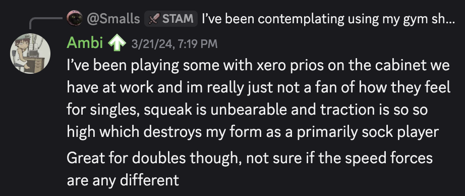
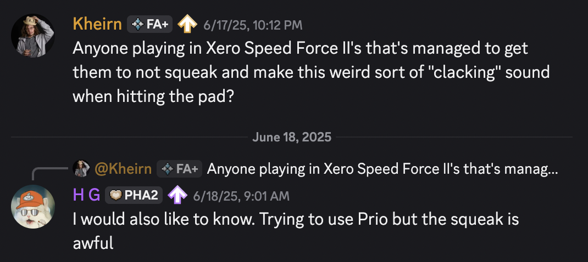
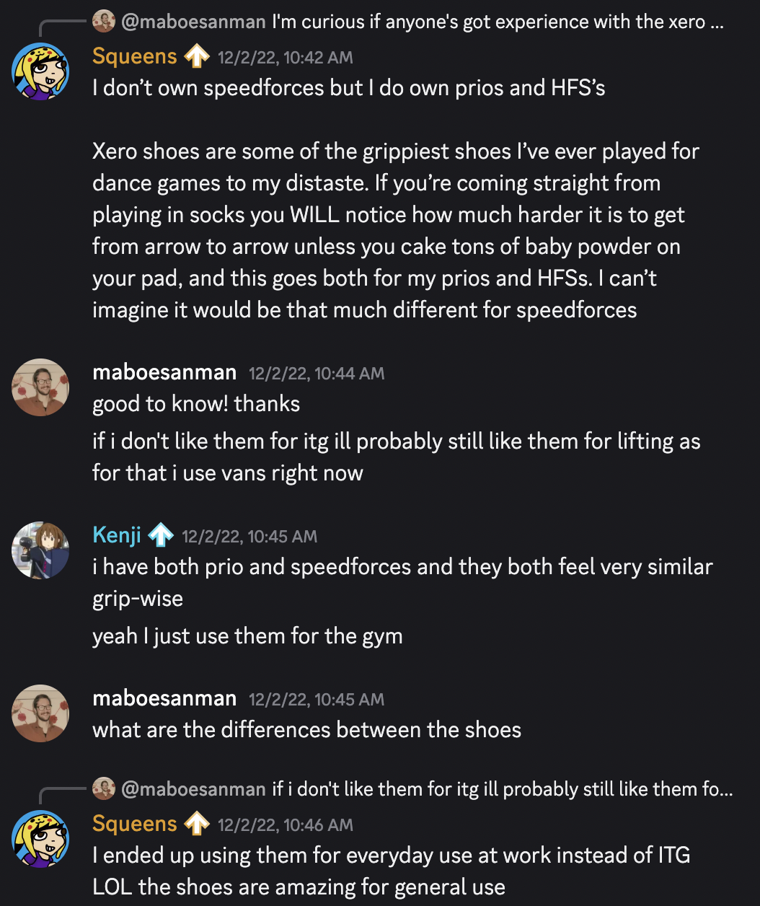
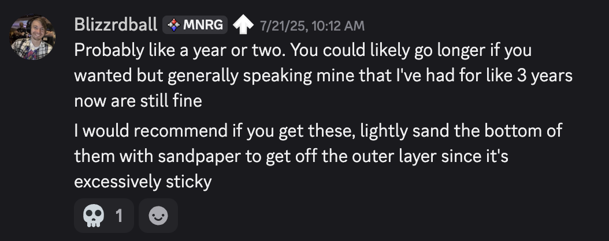
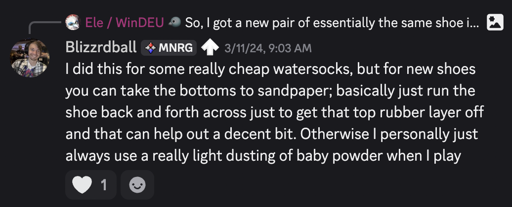
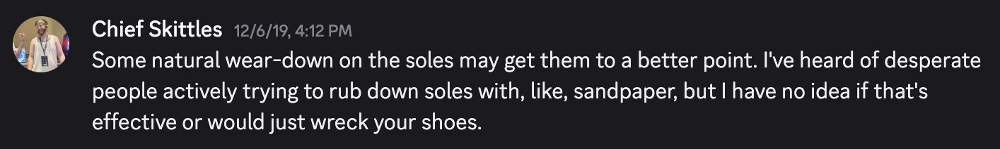
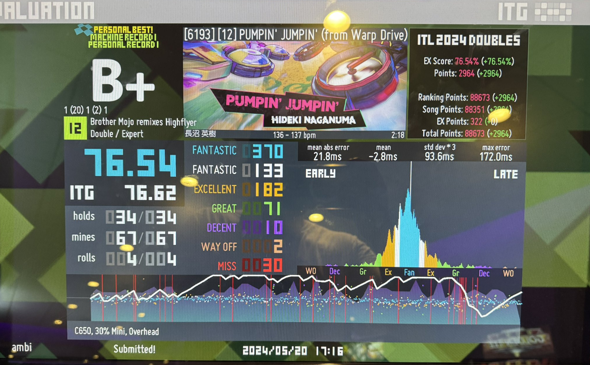
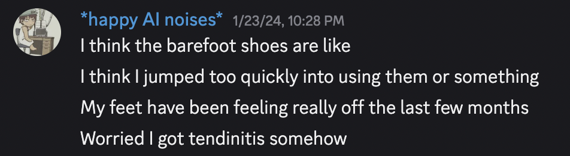
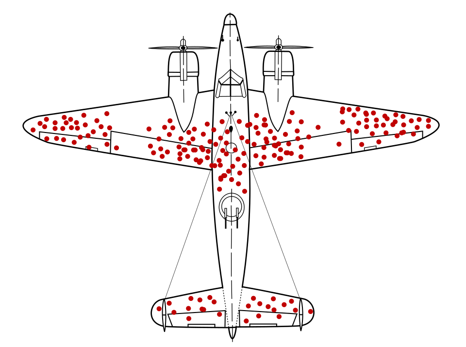

Xero Prio Review
Table of Contents
Xero Prio Review / Thoughts on Barefoot Shoes
I bought a pair of Xero Prio minimalist shoes on November 29th, 2023. My original intent was to wear these shoes for Dance Games, where they are a common option for players who want a performant dance game shoe which maintains some proprioception for your foot positioning compared to socks. I have used these shoes as my daily driver shoe since purchasing them (so roughly 3 months short of 2 years) and tl;dr I am retiring these shoes to serve as a gym shoe specifically for dance games, and will be going back to normal shoes for everyday wear.
First Impressions
I was drawn to the Xero Prios due to some of the common barefoot shoe arguments you will occasionally see online. I have very unusual foot dimensions (I almost always buy 4E or 6E width shoes) so hearing barefoot shoe enthusiast talking about toe box width as a primary selling point was a pretty big draw.
Another thing about Xero Prios that was attractive was: they don't look super creepy. This can be compared, for example, to Vibram FiveFingers, which are often called "better" than Xero Prios by barefoot running people. I would be extremely self-conscious wearing anything with these sorts of split toe boxes, so the much more normal looking form factor was a big relief.
Once these arrived at my house, I was immediately super impressed by how comfortable they were compared to my normal shoes. It was genuinely shocking to wear a shoe which didn't feel like it was restricting my foot into an unnatural form factor, and so I made the decision to wear this as my full-time daily use shoe as well.

Xero Prios as a Dance Game Shoe
Footwear is highly important to dance game players, who need to execute precise foot movements at high speeds. As a stamina player, I primarily played on very sensitive pads in socks, where I could use sliding form. However, I decided to get some dance game shoes for two main reasons.
First, I was fortunate enough to have a stepmania cabinet at my workplace. This, naturally, made me really want to use it (and hunt for high scores, etc), but playing in socks on a public cab was obviously a bit of a non-starter. I tried to just use my normal running shoes, but they felt way too heavy and the performance falloff compared to my performance in socks was too frustrating.
Second, I really wanted to learn how to play ITG Doubles. With rare access to two dance pads, I felt like it would be a good use of effort to learn this game mode I otherwise wouldn't get to play. However, even if I managed to get a home setup with 2 pads for doubles, doing so in socks struck me as extremely dangerous.
My original try was using FitKicks, which seem like another popular option for ITG players. However, I could never get into them as a viable option. I tried two different sizes, but I encountered a lot of difficulty keeping the shoes on my feet. A minimalish movement without too much lift would inevitably clip the center panel or a bracket, and the shoe would fly off my foot completely. FitKicks definitely just felt like very loose socks with a rubber sole on the bottom, and it never really seemed to work out for me.
Xero Prios were next on the shortlist for available tries here, since they were lightweight, inexpensive, and let me maintain some feel of the ground beneath my feet (useful for understanding where my feet were on the pad without looking down). My first impression of the shoe was admittedly not so positive: I thought the soles were way too grippy, and they made an ungodly squeaking noise whenever I tried to play 16th note runs. However, I did feel that they were much better for doubles, and they obviously stayed on my feet much better than FitKicks.

Grip complaints seem very common with these shoes among stronger ITG players, and you will see this sort of sentiment from a variety of players besides myself.


However, several months of walking around in the shoes made the squeaking sound completely disappear. Once the shoe wore down a bit, I had pretty much no problems with them for either tech charts or stamina (although playing stamina in shoes is still not my favorite). It did take several months of general wear to reach this point, though. A strategy I have seen in some dance game discords for this sort of problem is to lightly sandpaper the soles, although this seems more common for very cheap shoes rather than stuff like Xeros. Your mileage may vary: I just wore the shoes everywhere for a bit until they wore naturally.



Overall, I think the Xero Prios were a good investment for what I wanted (i.e. a way to play doubles / on public cabinets). I was able to successfully learn doubles up to passing my first ITG Doubles 12, and I generally do not have too many complaints about them after wearing them down enough for the squeaking / grip to stop. Likewise, I can play ITG singles 13/14s in these shoes just fine now: I don't like pushing uppers as much in shoes compared to socks, but it's mostly fine.

Xero Prios as a Daily Shoe
I am not a big "barefoot shoe" guy, so most of the experiences I had wrt wearing these shoes were from the perspective of somebody clearly wearing them for a purpose other than becoming a barefoot shoe guy. Barefoot shoe people seem to care a lot about getting good ground feel and other related things, but from my perspective the shoes were a huge departure from anything I had worn before.
An important thing about barefoot shoes is that they don't have any padding, or heel support. This is, generally speaking, seen as a positive. It's what allows the shoes to be so light, for them to allow you to feel cracks and texture underneath your feet, and ostensibly which allows you to "undo the damage caused by normal shoes" or whatever. In practice, this often makes them a little bit painful to wear around, especially if you walk or run in them a considerable amount.
People often say that your feet will get stronger, or your gait will adjust, but in my experience this did not really pan out. I walk to work every day, and if you're walking for just a few blocks each day these shoes are extremely comfortable. However, at conventions / conferences / tournaments / etc, I am frequently complaining about my feet being sore.

I did originally hold out hope that this was going to go away, similar to my complaints about the squeaking while playing dance games. However, this did not really happen. My feet will simply reliably hurt if I walk around too much in these shoes, and this is less the case for other shoes.
Most of the stuff you find online about switching to barefoot shoes will tell you that the muscle pain goes away after a week or two of using it, and that after switching you will not want to go back to normal shoes. It seems likely to me that this reflects some degree of survivorship bias, and that most people who experience these sorts of issues just quit wearing the shoes and do not spend time posting on barefoot shoe support forums.

Conclusion
I really like the Xero Prios. Or at least, I want to like them more than I do. I don't have strong opinions about the shoe industry or about feeling the ground beneath my feet or anything like that: I just wanted a wide shoe which was light and useable for dance games.
However, I think it's important to recognize when something isn't working – Xero Prios consistently cause issues when I'm walking around for more than about an hour at a time. Most of the time this is, like, fine: my feet don't feel injured and it's not like anything super severe happened as a result of wearing them. It's possible that I could have been completely fine if I did explicit training to wear these shoes, if I did tendon exercises or calf raises, or whatever. But I didn't do that, and I think I've grown pretty tired of wearing them as a result.